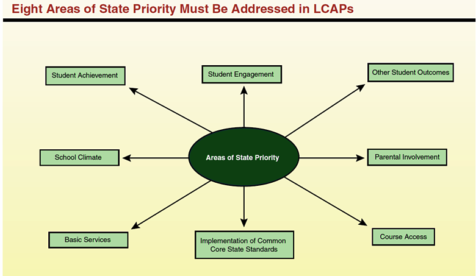

As part of the Local Control Funding Formula (LCFF), school districts, COEs, and charter schools are required to develop, adopt, and annually update a three-year Local Control and Accountability Plan (LCAP).
The LCAP must focus on eight areas identified as California’s educational priorities as well as its own local priorities. The eight areas of specified state priorities are intended to encompass the key ingredients of high-quality educational programs. The plan must describe the overall vision for students, annual goals and strategic actions needed to achieve the goals. In formulating the plan, each school district/county office must engage parents, employees, educators and the community in developing these plans.
The Plan must demonstrate how the budget ensures alignment of projected spending and services to support the achievement of the goals. Each year the plan must provide data on how well the plan meets the overall goals and the goals for each numerically significant student subgroup.

An Overview of the Local Control Funding Formula, LAO, July 29, 2013